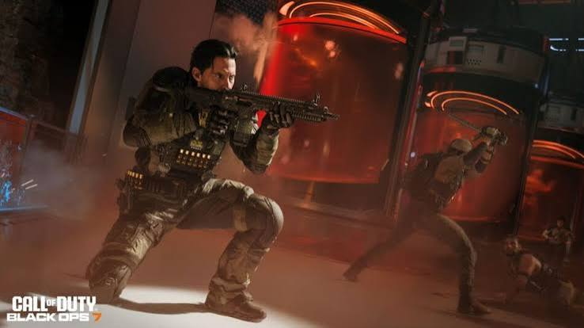

O Universo Black Ops
Call of Duty: Black Ops é uma das subfranquias de maior sucesso do mundo dos games. Em resumo, ela troca as guerras tradicionais por operações secretas, espionagem e teorias da conspiração, cobrindo desde a Guerra Fria até o futuro tecnológico.
O universo do jogo se divide em três pilares principais:
Campanha: Histórias instigantes e cheias de reviravoltas psicológicas (como lavagem cerebral e agentes duplos), focadas em personagens marcantes como Alex Mason e Frank Woods.
Multiplayer: Combates online rápidos e dinâmicos. Os jogos mais recentes contam com o Omnimovimento, um sistema que permite correr, deslizar e mergulhar em qualquer direção (360°).
Modo Zumbis: Um modo cooperativo onde os jogadores se unem para sobreviviver a hordas infinitas de mortos-vivos enquanto resolvem segredos complexos escondidos no mapa.
Composto por títulos históricos (como Black Ops 1 e 2) e lançamentos modernos (como Black Ops 6 e o recente Black Ops 7), a saga se consolidou como uma mistura perfeita de ação de cinema, jogabilidade ágil e mistérios sobrenaturais.